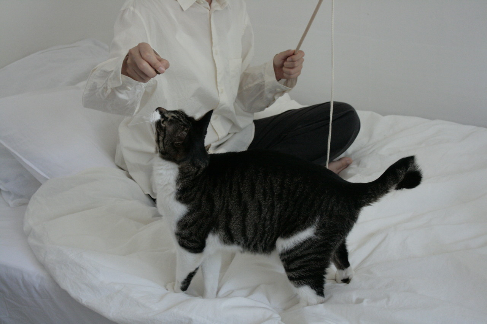
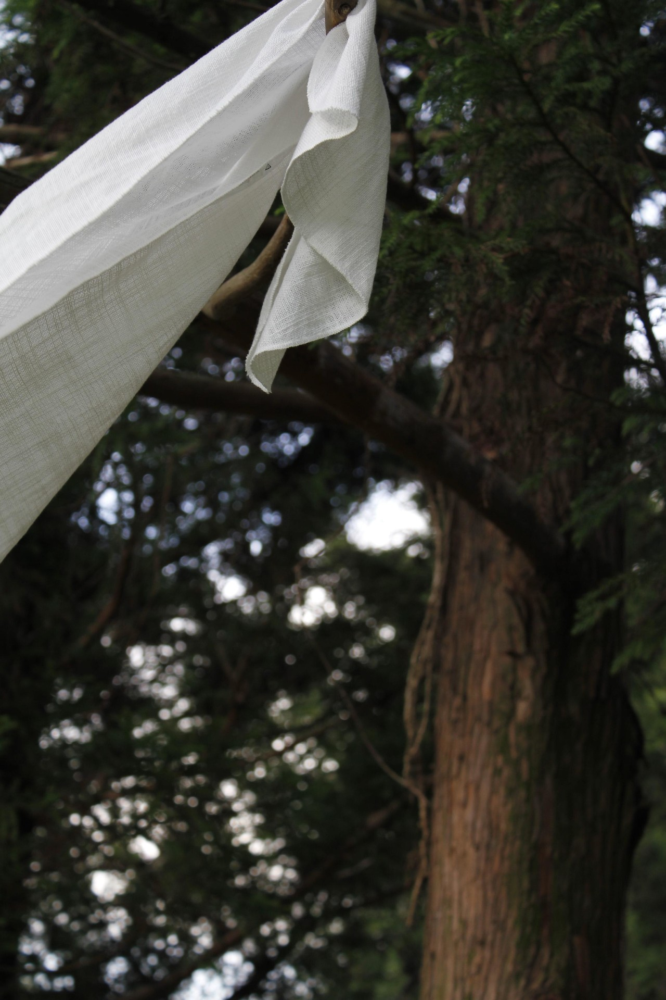

- 
- 반려동물과 함께하기 위해 잠시 접어두어야만 했던 일상 속 나를 위한 시간들,
나의 취향보다는 반려동물을 위해 선택했던 사물들, 나의 일상을 지키고,
나의 동물을 더 생각 하기 위해 우고는 시작되었습니다.
For the moments of my own self I used to put aside to stay my pets, The things I used to choode for my pets rather than my taste, wugo was start to maintain your daily rouine and care your pets more.
-
우고가 지키고 싶은 두 가지 원칙
무해함
반려동물에게 안전한 재료와 성분
어울림
자연스럽고 조화로운 디자인THE PRINCIPLES WUGO PURSUES
Harmlessness
safe materials and components for pets
Harmony
natural and harmonious deeign for your space - 